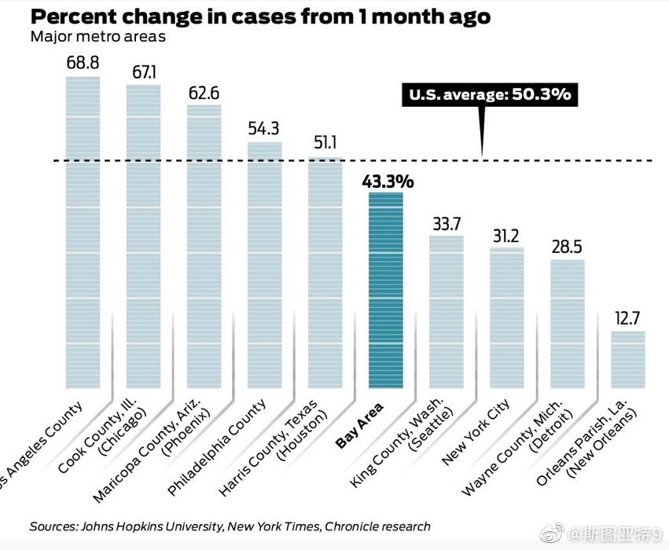

武汉那个5-6%抗体的新闻，其实是需要谨慎来看的。这跟那个斯坦福等机构研究的Santa Clara和洛杉矶2.6%和4%抗体的研究被广泛批评的原因是一样的。一般认为，现在能做到大规模测试的抗体测试准确率都不太高。而且抗体测试的特点是假阳性比较高，假阴性比较低。如果3%的假阳性率就会把抗体比例拉高3%，而一共数字才只有那么5-6%这样的。斯坦福研究还有抽样硬伤，武汉那个研究也不知道怎么抽样的。所以看不到细节光看一个数字什么也说明不了。现在还有一种未证实的怀疑，认为一小部分普通冠状病毒感冒的患者有可能产生新冠抗体。这样的话，只有百分之几的抗体数字就更难说明什么了。有一件事情可以说明，那就是武汉的感染比例看来是远低于纽约等城市的，要低一个数量级。

斯图亚特9
2020-05-21
斯图亚特9
2020-05-21
旧金山纪事报对比了美国各大都市圈在过去一个月病例数下降的幅度。洛杉矶最差，湾区和平均差不多。感觉湾区的瓶颈过不去了，得强行开张了。这也说明加州州长说的加州各县都可以Phase 2解封，唯独洛杉矶不许，是有道理的。
- 
斯图亚特9
2020-05-21
为什么英国和美国很像，每日新增感染数就是不下来，而法国德国意大利西班牙的感染数都有大幅的下落？